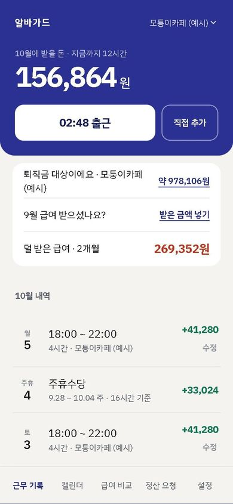
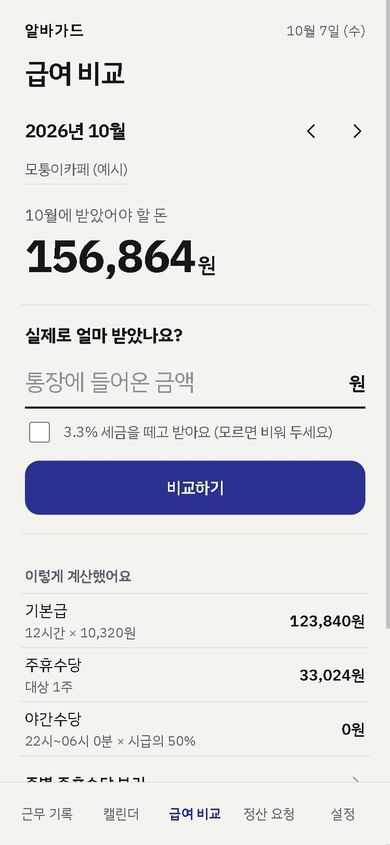
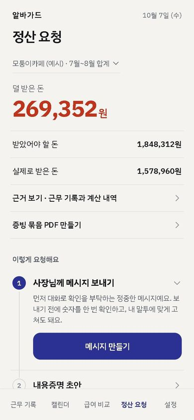

<!doctype html>
<html lang="ko">
<head>
<meta charset="utf-8">
<meta name="viewport" content="width=device-width, initial-scale=1, viewport-fit=cover">
<title>알바가드 설문 · 3분</title>
<meta name="description" content="알바비 기록·비교·요청 앱 알바가드에 대한 3분 설문이에요. 이름은 받지 않아요.">
<meta property="og:type" content="website">
<meta property="og:title" content="알바비, 제대로 받고 있나요? · 3분 설문">
<meta property="og:description" content="수업 과제로 만드는 알바비 앱 '알바가드' 설문이에요. 이름 없이 12문항, 3분이면 끝나요.">
<meta property="og:image" content="https://jihooni217.github.io/albaguard/og.png">
<meta property="og:url" content="https://jihooni217.github.io/albaguard/survey.html">
<link rel="icon" href="./icon-192.png">
<link rel="preconnect" href="https://fonts.googleapis.com">
<link href="https://fonts.googleapis.com/css2?family=IBM+Plex+Sans+KR:wght@400;500;600;700&display=swap" rel="stylesheet">
<style>
  :root { color-scheme: light; --bg:#f4f3ef; --surface:#fff; --text:#15171a; --muted:#5d636d; --faint:#8b9099; --line:#dcd9d0; --brand:#2a3193; --green:#0f7a55; --red:#c2331c; }
  * { box-sizing: border-box; }
  html, body { margin: 0; background: var(--bg); color: var(--text); font-family: 'IBM Plex Sans KR', -apple-system, 'Apple SD Gothic Neo', 'Malgun Gothic', sans-serif; -webkit-tap-highlight-color: transparent; }
  main { max-width: 480px; margin: 0 auto; padding: 20px 20px calc(40px + env(safe-area-inset-bottom)); min-height: 100dvh; }
  .top { display: flex; justify-content: space-between; align-items: baseline; font-size: 13px; color: var(--muted); }
  .top b { color: var(--brand); font-weight: 700; }
  .bar { height: 3px; background: var(--line); border-radius: 2px; margin: 10px 0 28px; overflow: hidden; }
  .bar i { display: block; height: 100%; background: var(--brand); width: 0; transition: width .25s; }
  h1 { font-size: 24px; line-height: 1.35; margin: 0 0 6px; letter-spacing: -0.02em; }
  .sub { color: var(--muted); font-size: 14px; line-height: 1.6; margin: 0 0 22px; }
  .opts { display: flex; flex-direction: column; gap: 8px; }
  .opt { display: block; width: 100%; text-align: left; font: inherit; font-size: 16px; padding: 15px 16px; border: 1.5px solid var(--line); border-radius: 14px; background: var(--surface); color: var(--text); cursor: pointer; }
  .opt:active { transform: scale(0.99); }
  .opt.on { border-color: var(--brand); background: var(--brand); color: #fff; }
  textarea { width: 100%; min-height: 110px; font: inherit; font-size: 16px; padding: 14px; border: 1.5px solid var(--line); border-radius: 14px; background: var(--surface); resize: vertical; }
  .row { display: flex; gap: 10px; margin-top: 22px; }
  .btn { flex: 1; font: inherit; font-size: 16px; font-weight: 700; padding: 15px; border: 0; border-radius: 14px; background: var(--brand); color: #fff; cursor: pointer; }
  .btn.ghost { background: transparent; color: var(--muted); font-weight: 500; flex: 0 0 auto; padding: 15px 10px; }
  .btn:disabled { opacity: .4; }
  .shots { display: grid; grid-template-columns: repeat(3, 1fr); gap: 8px; margin: 14px 0 6px; }
  .shots figure { margin: 0; }
  .shots img { width: 100%; display: block; border-radius: 10px; border: 1px solid var(--line); }
  .shots figcaption { font-size: 11.5px; color: var(--muted); margin-top: 5px; text-align: center; }
  .link { display: inline-block; margin-top: 10px; color: var(--brand); font-weight: 600; font-size: 14px; }
  .done h1 { color: var(--green); }
  .note { font-size: 12.5px; color: var(--faint); line-height: 1.6; margin-top: 28px; }
  .err { color: var(--red); font-size: 14px; margin-top: 12px; }
</style>
</head>
<body>
<main id="app"></main>
<script>
const URL_ = 'https://jejrynhqdvckspntpkxj.supabase.co'
const KEY = 'sb_publishable_ZFLR4ZMjc85JAnWl7bdwCw_y5AHMJnn'

// 질문 목록. when(답)이 거짓이면 그 사람에게는 보이지 않는다
const FEATURES = ['출퇴근 기록 (고쳐도 이전 내용이 남음)', '받은 돈과 비교해 덜 받은 돈 알려 주기', '사장님께 보낼 정산 요청 메시지', '증빙 묶음 PDF', '기록 등록 (서버에 확인 번호·등록 시각)', '근무 중에만 열리는 미니게임']
const worked = (a) => a.status === 'now' || a.status === 'past'
const past = (a) => a.status === 'past'
const Q = [
  { id: 'status', q: '알바를 하고 있나요?', opts: [['now', '지금 하고 있어요'], ['past', '예전에 했어요'], ['never', '한 적 없어요']] },
  { id: 'job', when: worked, q: (a) => past(a) ? '어떤 알바를 했나요?' : '어떤 알바를 하나요?', sub: '여러 개면 가장 오래 한 것', opts: ['카페', '편의점', '음식점', '학원·과외', '그 밖'] },
  { id: 'hours', when: worked, q: (a) => past(a) ? '한 주에 몇 시간쯤 일했나요?' : '한 주에 몇 시간쯤 일하나요?', opts: ['15시간 미만', '15~25시간', '25시간 이상'] },
  { id: 'holiday', when: worked, q: (a) => past(a) ? '주휴수당을 받았나요?' : '주휴수당을 받고 있나요?', sub: '주 15시간 이상 일하면 받을 수 있는 수당이에요', opts: ['받음', '안 받음', '모름'] },
  { id: 'contract', when: worked, q: '근로계약서를 썼나요?', opts: ['썼고 사본도 있음', '썼지만 사본은 없음', '안 씀'] },
  { id: 'check', when: worked, q: (a) => past(a) ? '급여는 어떻게 확인했나요?' : '급여는 어떻게 확인하나요?', opts: ['통장에 들어온 총액만 봄', '직접 계산해 봄', '사장님이 주는 명세서', '확인 안 함'] },
  { id: 'short', when: worked, q: '받아야 할 돈보다 적게 받은 것 같았던 적이 있나요?', opts: ['있음', '없음', '잘 모르겠음'] },
  { id: 'calc', when: worked, q: '받은 돈이 맞는지 직접 계산해서 확인해 본 적이 있나요?', opts: ['있음', '없음'] },
  { id: 'reaction', when: (a) => worked(a) && a.short === '있음', q: '적게 받았을 때 어떻게 했나요?', opts: ['사장님께 말함', '말 못 하고 넘어감', '친구·가족과 상의', '신고를 알아봄'] },
  { id: 'ifshort', q: '급여날, 생각보다 적은 돈이 들어온다면 어떻게 할 것 같나요?', opts: ['바로 사장님께 묻는다', '계산부터 해 본다', '기록이 없어서 그냥 넘어갈 것 같다', '모르겠다'] },
  { id: 'worry', q: '그때 가장 걱정될 것 같은 건?', opts: ['사장님과의 관계', '내 계산이 맞는지', '증거가 없는 것', '신고 절차를 몰라서'] },
  { id: 'confidence', q: '주휴수당·야간수당을 내가 받을 수 있는지 계산할 자신이 있나요?', opts: ['있음', '대충 안다', '없음'] },
  { id: 'apps', q: '알바비 계산이나 기록에 써 본 앱이 있나요?', sub: '여러 개 골라도 돼요', multi: true, opts: ['없음', '하우머치', '알바천국·알바몬 계산기', '기그', '그 밖'] },
  { id: 'intro', intro: true },
  { id: 'useful', q: '가장 쓸모 있어 보이는 기능은?', opts: FEATURES },
  { id: 'useless', q: '반대로 "이건 안 쓸 것 같다"는 기능은?', opts: [...FEATURES, '없음'] },
  { id: 'input', q: '매달 받은 금액을 앱에 직접 넣어야 해요. 어떨 것 같나요?', opts: ['할 만하다', '귀찮지만 할 것 같다', '안 할 것 같다'] },
  { id: 'ads', q: '미니게임 화면에만 광고가 붙는다면 괜찮나요?', sub: '기록·급여 화면에는 광고가 없어요', opts: ['괜찮다', '싫다', '상관없다'] },
  { id: 'design', q: '화면 디자인은 어때 보이나요?', opts: ['예쁘다', '평범하다', '별로다'] },
  { id: 'use', q: '이 앱이 실제로 있다면 쓸 건가요?', opts: ['지금 쓴다', '알바를 시작하면 쓴다', '덜 받은 상황이 생기면 쓴다', '안 쓴다'] },
  { id: 'free', q: '더 있었으면 하는 기능이나 바뀌었으면 하는 점이 있나요?', sub: '없으면 비워 두고 보내도 돼요', text: true },
]

const app = document.getElementById('app')
const answers = {}
let i = 0
const esc = (s) => String(s).replace(/[&<>"]/g, (c) => ({ '&': '&amp;', '<': '&lt;', '>': '&gt;', '"': '&quot;' }[c]))
const visible = () => Q.filter((q) => !q.when || q.when(answers))
const text = (v) => (typeof v === 'function' ? v(answers) : v)

function render() {
  const list = visible()
  if (i >= list.length) return submit()
  const q = list[i]
  const n = list.filter((x) => !x.intro).indexOf(q) + 1
  // 전체 개수는 알바 여부로만 정한다 (뒤 답에 따라 생기는 질문 때문에 숫자가 왔다 갔다 하지 않게)
  const total = Q.filter((x) => !x.intro && (x.id === 'reaction' ? worked(answers) : !x.when || x.when(answers))).length
  const pct = Math.round((list.indexOf(q) / list.length) * 100)
  let body = ''
  if (q.intro) {
    body = `<h1>잠깐, 앱을 소개할게요</h1>
      <p class="sub">알바가드는 사장님과 연결하지 않고 혼자 출퇴근을 기록하면, 주휴·야간수당까지 넣은 급여를 계산해 실제 받은 돈과 비교하고, 덜 받았으면 사장님께 보낼 메시지와 증빙 자료까지 만들어 주는 앱이에요.</p>
      <div class="shots">
        <figure><figcaption>이번 달 받을 돈</figcaption></figure>
        <figure><figcaption>받은 돈과 비교</figcaption></figure>
        <figure><figcaption>덜 받은 돈 요청</figcaption></figure>
      </div>
      <a class="link" href="./" target="_blank" rel="noopener">앱 직접 열어 보기 (설정 탭에서 예시 데이터 넣기) →</a>
      <div class="row"><button class="btn" id="next">봤어요, 다음</button></div>`
  } else if (q.text) {
    body = `<h1>${esc(text(q.q))}</h1>${q.sub ? `<p class="sub">${esc(q.sub)}</p>` : ''}
      <textarea id="ta" placeholder="자유롭게 적어 주세요"></textarea>
      <div class="row"><button class="btn ghost" id="back">이전</button><button class="btn" id="next">보내기</button></div>`
  } else {
    const picked = answers[q.id]
    const opts = q.opts.map((o) => {
      const [v, label] = Array.isArray(o) ? o : [o, o]
      const on = q.multi ? (picked ?? []).includes(v) : picked === v
      return `<button class="opt${on ? ' on' : ''}" data-v="${esc(v)}">${esc(label)}</button>`
    }).join('')
    body = `<h1>${esc(text(q.q))}</h1>${q.sub ? `<p class="sub">${esc(q.sub)}</p>` : ''}
      <div class="opts">${opts}</div>
      <div class="row">${i > 0 ? '<button class="btn ghost" id="back">이전</button>' : ''}${q.multi ? '<button class="btn" id="next">다음</button>' : ''}</div>`
  }
  app.innerHTML = `<div class="top"><b>알바가드 설문</b><span>${q.intro ? '' : `${n} / ${total}`}</span></div>
    <div class="bar"><i style="width:${pct}%"></i></div>${body}
    ${i === 0 ? '<p class="note">수업 과제(SW기술창업)로 만드는 앱의 설문이에요. 이름·연락처는 받지 않고, 답은 "N명 중 M명"처럼 묶어서만 써요. 3분이면 끝나요.</p>' : ''}`

  app.querySelectorAll('.opt').forEach((b) => b.onclick = () => {
    const v = b.dataset.v
    if (q.multi) {
      const cur = answers[q.id] ?? []
      answers[q.id] = v === '없음' ? ['없음'] : cur.includes(v) ? cur.filter((x) => x !== v) : [...cur.filter((x) => x !== '없음'), v]
      render()
    } else {
      answers[q.id] = v
      // 뒤에 나올 질문이 바뀔 수 있으니(알바 여부), 고른 뒤에는 더 뒤의 답을 지운다
      Q.slice(Q.indexOf(q) + 1).forEach((x) => { if (x.when) delete answers[x.id] })
      i++
      render()
      window.scrollTo(0, 0)
    }
  })
  const next = app.querySelector('#next')
  if (next) next.onclick = () => {
    if (q.text) answers[q.id] = (app.querySelector('#ta').value || '').trim().slice(0, 500)
    if (q.multi && !(answers[q.id] ?? []).length) return
    i++
    render()
    window.scrollTo(0, 0)
  }
  const back = app.querySelector('#back')
  if (back) back.onclick = () => { i--; render(); window.scrollTo(0, 0) }
}

async function submit() {
  app.innerHTML = `<div class="top"><b>알바가드 설문</b></div><div class="bar"><i style="width:100%"></i></div><h1>보내는 중…</h1>`
  try {
    const res = await fetch(`${URL_}/rest/v1/survey`, {
      method: 'POST',
      headers: { apikey: KEY, Authorization: `Bearer ${KEY}`, 'Content-Type': 'application/json' },
      body: JSON.stringify({ status: answers.status, answers }),
    })
    if (!res.ok) throw new Error(res.status)
    app.innerHTML = `<div class="top"><b>알바가드 설문</b></div><div class="bar"><i style="width:100%"></i></div>
      <div class="done"><h1>고마워요, 다 됐어요</h1>
      <p class="sub">답은 발표 자료와 앱을 고치는 데 써요. 앱이 궁금하면 아래에서 열어 보세요. 설치 없이 폰에서 바로 돼요.</p>
      <a class="link" href="./" target="_blank" rel="noopener">알바가드 열어 보기 →</a></div>`
  } catch (e) {
    app.innerHTML = `<div class="top"><b>알바가드 설문</b></div><div class="bar"><i style="width:100%"></i></div>
      <h1>보내지 못했어요</h1><p class="sub">인터넷 연결을 확인하고 다시 눌러 주세요. 답은 그대로 남아 있어요.</p>
      <div class="row"><button class="btn" id="retry">다시 보내기</button></div>`
    app.querySelector('#retry').onclick = submit
  }
}
render()
</script>
</body>
</html>
